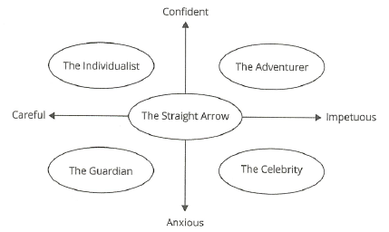

Behavioral Finance
Cognitive errors
Cognitive errors can be overcome by education.
Cognitive errors + high standard of living → narrow deviation will help to achieve the goal.
Quantitative education is recommended.
Belief perseverance
Conservatism bias
Conservatism bias occurs when market participants rationally form an initial view but then fail to change that view as new information becomes available.
An initial view is rationally formed based on initial information and then maintained.
Investors are to slow to update views and may hold securities too long. To mitigate, seek new information and alternative views.
Conservative bias preserve the prior views.
Conservative bias can be overcome by asking the right questions and seeking qualified advice.
Conservative bias investors
- are unwilling or slow to update a view or forecast for new information, and therefore hold an investment too long.
- hold an investment too long to avoid the mental effort or stress of updating a view, when the new information is complex to understand. (cognitive cost)
Confirmation bias
Confirmation bias occurs when market participants look for new information or distort new information to support an existing view.
Only information that supports the initial view is sought or considered.
Can lead to under-diversified and over concentration in employer stock. To mitigate, seek out contrary information and alternate methods of analysis.
Confirmation bias investor seeks for the information to confirm his view.
Excessive trading → confirmation bias, self-attribution bias
Confirmation bias investors
- consider positive but ignore negative information and therefore hold investment too long.
- set up the decision process or data screens incorrectly to find what they want to see
- underdiversify as they become overly convinced their ideas are correct, resulting in concentrated positions.
- over concentrate in the sock of their employer believing they have an information advantage in to that security
Representativeness bias
Representativeness is based on a belief the past will persist and new information is classified based on past experience or classification.
Once a classification is made, the accuracy of the classification is not considered. Base-rate (the assumed probability of the classification) and sample-size (the amount of initial data) neglect are forms of representativeness.
Overemphasizing data covering short time periods and reacting too quickly to new information. To mitigate, understand statistical analysis and develop a suitable long-term strategic asset allocation for the portfolio.
Representative bias investor overweights the recent information.
Representative bias investor overestimates the likely return.
Representative bias refers to judgements based on stereotype.
- 기존 분류(판단)을 번복 (base rate neglect)
- Base rate neglect, where the base rate (probability) of the initial classification is not adequately considered.
- 작은 추세의 맹신 (sample-size neglect)
- 개인, 회사의 과거 track record의 맹신 → extrapolation, 미래도 동일 추세일 것이라고 가정
- Sample-size neglect makes the initial classification based on an overly small and potentially unrealistic sample of data.
Representativeness bias investors
- attach too much importance to new piece of information, or to a small sample. The impacts of such behavior can be excessive turnover based on short-term performance. The result can be excessive transaction fees and subsequent underperformance of the asset or fund that participants have switched to.
- make decisions based on simple rules of thumb and classification without thorough and more difficult analysis, which incur a high cognitive cost. Too much or too little importance may be attached to new information.
Illusion of control bias
Illusion of control bias exists when market participants think they can control or affect outcomes when they cannot.
It is often associated with emotional biases: illusion of knowledge (belief you know things you do not know), self-attribution (belief you personally caused something to happen), and overconfidence biases (an unwarranted belief you are correct).
Individuals assume they can influence the outcome even when they cannot.
Trade too quickly and under-diversify. To mitigate, apply probabilities analysis, consider alternative views and worst case scenarios.
Complex model + many data → overconfidence, illusion of control
Illusion of control bias leads to under-diversification.
Illusion of control bias investors
- trade more than is appropriate as they mistakenly believe they can control the outcome of a trade or are overconfident in their analysis.
- fail to adequately diversify because they analyze a narrow range of investments and fail to consider other investments and asset types.
Hindsight bias
Hindsight bias is a selective memory of past events, actions, or what was knowable in the past, resulting in an individual’s tendency to see things as more predictable than they really are.
Hindsight bias is caused by three heuristic errors:
- Individuals distort their earlier predictions when looking back. This is the tendency to believe that we knew the outcome of an uncertain event all along.
- Individuals tend to view events that have occurred as inevitable.
- Individuals assume they could have foreseen uncertain events.
Selectively remembering what was known or done in the past.
Taking too much risk or clients who unfairly blame their manager. To mitigate, keep and review records to determine successes and failures. Don’t confuse value added with an up market.
Hindsight bias investors
- overestimate the rate at which they correctly predicted events which could reinforce an emotional overconfidence bias.
- become overly critical of the performance of others.
Processing errors
Anchoring and adjustment bias
Anchoring and adjustment bias occurs when market participants use psychological heuristic experience based trial and error rules to unduly affect probabilities. Changes are made but in relation to the initial view and therefore the changes are inadequate.
Similar to conservatism except changes are made from the initial conclusion point.
Failing to make a large enough adjustment from the initial anchor point. To mitigate, consider what would happen if a new analysis were made instead of starting from the initial anchor.
Anchoring and adjustment bias investors stay anchored to an initial estimate and do not adjust for new information.
Mental accounting bias
Mental accounting bias arises when money is treated differently depending on how it is categorized.
Funds are categorized and the categorization determines how the funds are treated (the layers in BPT, Behavioral Portfolio Theory).
Ignores correlation causing risk to be overstated. Incorrectly shifts portfolio focus from total return to income received. To mitigate, look at the total return and risk of the overall portfolio.
Mental accounting bias investor considers multiple layers in investment.
Mental accounting bias investor neglects correlations between layers. It could lead to overestimate the total risk.
Mental accounting bias can be overcome by considering correlations between different investment layers.
Mental accounting bias investors
- structuring portfolios in layers to meet different priority goals. This may help clients overcome other biases. But it ignores correlation between layers of the portfolio and results can be suboptimal from a traditional perspective.
- failing to lower portfolio risk by adding assets with very low correlation.
- segregating return into arbitrary categories of income, realized gains and losses, or unrealized gains and losses. People tend to illogically distinguish between returns from income and capital gains. The tendency is to conserve capital gains but spend income. The result tends to be an overemphasis on income generating assets, resulting in a lower total return.
Framing bias
Framing bias occurs when decisions are affected by the way in which the question or data is “framed.” In other words, the way the question is phrased affects how the information is processed leading to the answer given.
How information is presented changes the decisions made (perceived gain versus loss).
Short-term trading and sub-optimal asset allocation. To mitigate, focus on expected return and risk, not perceived gain or loss from a past value.
Framing bias could lead to inappropriate asset allocation for current circumstances.
Framing bias investors
- fail to properly assess risk and end up overly risk-averse or risk-seeking.
- choosing suboptimal risk for their portfolio or assets based on the way a presentation is made.
- become overly concerned with short term price movement and trade too often
Availability bias
Availability bias starts with putting undue emphasis on the information that is readily available.
Confusing what is easy to recall with what is important.
Making choices based on irrelevant information and inadequate diversification. To mitigate, follow a disciplined research process and an investment policy statement.
Financial journal is selective information.
Availability bias can be further broken down into the following overlapping causes:
- Retrievability - If an idea or answer can be thought of quicker than others can, it is often chosen as correct, even if it is not.
- Categorization - This is the tendency to place items in categories that share what individuals perceive as common characteristics. Once place into a category, the individual then tends to treat all items within the category as being the same when making decisions rather than looking at the individual characteristics of each investment. Individuals make the mistake of assuming the categories are better descriptions of reality than they actually are.
- Narrow range of experience - This results from an individual with a narrow range of experiences using her experience as a frame of reference when estimating probabilities for the population.
- Resonance - If a piece of information or an event strikes a chord with an individual’s own belief and desires, the individual may overweight the importance of this information when making decisions.
Availability bias investors
- choose a manager or investment based on advertising or recalling they have heard the name.
- limit investment choices to what they are familiar with and fail to consider alternative investments, resulting in:
- under-diversification
- inappropriate asset allocation
- overreact to recent market conditions while ignoring data on historic performance
- place too much emphasis on events that receive a large amount of media attention or advertising.
- likely to have excessive concentrated in employer stock
- likely to have home bias
Emotional Bias
Emotional bias is hard to overcome. Accommodation is recommended.
Qualitative education is recommended.
Loss aversion bias
Loss-aversion bias arises from feeling more pain from a loss than pleasure from an equal gain.
See prospect theory. Investors feel the pain of realized losses more than the pleasure of realized gain and are, therefore, likely to sell winners and hold losers. Myopic loss aversion postulates that many investors will under invest in risker equities, keeping equity prices too low and subsequent equity returns too high.
Selling winners may reduce upside and holding losers may increase risk. To mitigate, objectively forecast expected return and risk.
Loss aversion bias could lead to disposition effect, holding certain positions significantly under water, having high risk profiles longer than normal.
underperforming → decrease in volume → loss aversion bias, holding bad positions longer
Loss-aversion bias investors
- feeling less pleasure in a gain in value for a profit than pain in a decline in value for an equal loss.
- to avoid having the pain of loss, an investment holder will tend to hold onto loser too long but may sell winners too quickly. This tendency is called the disposition effect.
- trading too much by selling for small gains which raises transaction costs and lower returns
- incurring too much risk by continuing to hold assets that have deteriorated in quality and lost value
- If an initial decline in value occurs, then taking excessive risk in the hope of recovering. Investment managers can be particularly susceptible to this behavior.
- allowing the framing of the reference point to determine if a position is seen as a gain or loss.
- treating money that is made on a trade differently than other funds and taking excess risk with such money.
Overconfidence bias
Overconfidence bias occurs when market participants overestimates their own intuitive ability or reasoning.
It can show up as illusion of knowledge where they think they do a better job of predicting than they actually do. Combined with self-attribution bias, individuals will take personal credit when things go right (self-enhancing) but blame others or circumstances for failure (self-protecting).
Also referred to as illusion of knowledge. People feel they are smarter or know more than they do.
Underestimate risk and overestimate return, under diversify, and trade too much. To mitigate, maintain and review records of what works and what does not.
Overconfidence bias investor maintains highly concentrated portfolio.
Complex model + many data → overconfidence, illusion of control
Overconfidence bias can be overcome by keeping past investment records.
Overconfidence bias can lead to underestimate the risk and overestimate the return.
Overconfidence bias investors
- underestimate risk and overestimate return
- under-diversification
- excessive turnover and transaction costs resulting in lower return
- likely to have excessive concentrated in employer stock
Self-control bias
Self-control bias occurs when individuals lack self-discipline and favor immediate gratification over long-term goals.
See consumption and savings model. Lack of self-discipline. Individuals fail to balance the needs for short-term satisfaction with long-term goals.
Save too little and then take too much risk in an effort to compensate. Hold too many bonds to generate higher current income. To mitigate, establish and follow a budget and an investment policy statement.
Self-control bias investors
- insufficient savings accumulation to fund retirement needs, resulting from favoring current spending over saving.
- taking excessive risk in the portfolio to try and compensate for insufficient savings accumulation.
- an overemphasis on income producing assets to meet shorter-term income needs.
Status quo bias
Status quo bias occurs when comfort with the existing situation leads to an unwillingness to make changes.
Feeling comfortable with what currently exists and therefore not making changes.
Inappropriate risk and return. This is a hard bias to overcome; try to educate the client.
Status quo bias is do-nothing bias.
Status quo bias could lead to inappropriate asset allocation for current circumstances.
Status quo bias investors
- holding portfolios with inappropriate risk
- not considering other; potentially better investment options
Target date funds is one of the solutions to counteract status quo bias.
Endowment bias
Endowment bias occurs when an asset is felt to be special and more valuable simply because it is already owned.
Feeling what is owned is more valuable (better) than what could replace it, leading to status quo bias.
Holding what is owned leading to inappropriate asset allocation. If the bias imperils the ability of the client to meet critical goals, mitigation becomes essential. This may have to be done in stages.
Endowment bias investors
- failing to sell an inappropriate asset resulting in inappropriate asset allocation
- holding things you are familiar with because they provide some intangible sense of comfort.
Regret-aversion bias
Regret-aversion bias occurs when market participants do nothing out of excess fear that their actions could be wrong.
Do nothing to avoid the mental anguish of making an error of commission, leading to status quo bias.
Portfolio that are too conservative or aggressive. Mitigation requires educating the client on what combinations of return and risk are reasonable.
Regret-aversion bias investors do native diversification to minimize the future regret from missing out the investment opportunities.
Regret-aversion bias can be mitigated by using disciplined fundamental analysis.
Naive diversification could lead to fail to achieve optimal asset allocation.
Regret-aversion bias investors
- excess conservatism in the portfolio because it is easy to see that risker assets do at times underperform. Therefore, do no buy riskier assets and you won’t experience regret when they decline.
- this leads to long-term underperformance and a failure to meet goals.
- herding behavior is a form of regret-aversion where participants go with the consensus or popular opinion. Essentially the participants tell themselves they are not to blame if others are wrong too.
Self-attribution bias
People take personal credit for successes and attribute failure to external factors outside the individual’s control.
excessive trading → confirmation bias, self-attribution bias
Classification models
Barnewall two-way behavioral model
- Passive investor have not had to risk their own capital to gain wealth.
- Active investors have risked their own capital to gain wealth and usually take an active role in investing their own money.
Bailard, Biehl, and Kaiser (BB&K) five-way model

- the adventurer
- confident and impetuous
- might hold highly concentrated portfolios
- willing to take chances
- likes to make own decisions
- unwilling to take advice
- advisers find them difficult to work with
- the celebrity
- anxious and impetuous
- likes to be the center of attention
- might have opinions but recognizes limitations
- seeks and takes advice about investing
- the individualist
- confident and careful
- independent and confident
- likes to make own decisions after careful analysis
- good to work with because they listen and process information rationally
- the guardian
- anxious and careful
- cautious and concerned about the future
- concerned with the future and protecting assets
- may seek the advice of someone they perceive as more knowledgeable than themselves
- the straight arrow
- average investor
- sensible and secure
- neither overly confident nor anxious
- neither overly careful nor impetuous
- willing to take increased risk for increased expected return
Pompian behavioral model

- Passive Preserver - Emotional biases with higher risk aversion
- endowment, loss aversion, status quo, regret aversion, mental accounting, anchoring and adjustment
- Friendly Follower - Cognitive biases with higher risk aversion
- regret aversion, availability, hindsight, framing
- Independent Individualist - Cognitive biases with lower risk aversion
- overconfidence, self-attribution, conservatism, availability, confirmation, representativeness
- Active Accumulator - Emotional biases with lower risk aversion
- overconfidence, self-control, illusion of control
Limitations of classifying investors into behavioral types
- Individuals may simultaneously display both emotional biases and cognitive errors; the key issue is determining how to help the client accomplish her goals.
- An individual might display traits of more than one behavioral investor type.
- As investors age or circumstances change, they will most likely go through behavioral changes resulting in decreased or changing risk tolerance.
- Even though two individuals may fall into the same behavioral investor type, the individuals should not be treated the same due to their unique circumstances and psychological traits.
- Individual tend to shift unpredictably between rational to irrational behavior.
Client/adviser relationship
- The adviser understands the long-term financial goals of the client.
- The adviser maintains a consistent approach with the client
- The adviser acts as the client expects.
- Both client and adviser benefit from the relationship.
Risk tolerance questionnaires
- The same questionnaire can produce different results if the structure of the questions is changed.
- Investor biases are often ignored.
- Since the client’s IPS should be analyzed annually for appropriateness, the questionnaire should also be administered annually.
- Advisers may interpret what the client says too literally; client statements should be indicators.
- Risk tolerance questionnaires are probably better suited to institutional investors, where less interpretation is required.
- Institutional investors are generally more pragmatic and tend to approach investing from a thinking/cognitive approach with a better understanding of risk and return.
Reasons why employees have a tendency to invest in their company’s stock
- Familiarity and overconfidence
- Representativeness; naively extrapolate past good performance into expectations
- Framing; employer’s contribution in stock instead of cash is seen as an implicit recommendation of the quality of the stock as an investment.
- Loyalty; hold the stock in an effort to help the company.
- Financial incentives; tax incentives or allowed to purchase the stock at a discount.
Behavioral portfolio theory (BPT)
- Investor goals and the importance of each goal determine the allocation to each layer.
- Asset selection will be dome by layer and based on the goal for that layer.
- The number of assets in a layer will reflect the investor’s risk aversion.
- If an investor believes she holds an information advantage, more concentrated positions will be held.
- If an investor is loss averse, the investor will hold larger cash positions to avoid the possible need to sell assets at a loss to meet liquidity needs. Securities may continue to be held simply to avoid realizing losses rather than being based on the security’s potential.
Analyst forecasts and behavioral finance
Overconfidence
- Illusion of knowledge bias - They think they are smarter than they are, and forecasts are more accurate than the evidence indicates. Fueled by collecting a large amount of data.
- Representativeness - Incorrectly combining the probability that the information fits a certain information category and the probability that the category of information fits the conclusion.
- Availability bias - Undue weight given to more readily accessible, recently recalled data.
- Ego defense mechanism
- Self-attribution bias - Analysts take credit for their successes and blame others or external factors for failures.
- Hindsight bias - Selectively recall the forecast or reshape it in such a way that it fits the outcome. By making their prior forecasts fit outcomes, they fail to properly recalibrate their models when making future forecasts.
Mitigating overconfidence
- Self-calibration - analyze forecasts in relation to the actual outcome. Getting prompt feedback through self-evaluations, colleagues, and superiors, combined with a structure that rewards accuracy should lead to better self-calibration.
- Seek at least one counterargument for why the forecast may not be accurate. The analyst should also consider sample size. Basing forecasts on small samples can lead to unfounded confidence in unreliable models.
- Utilize a Bayesian framework to re-estimate probabilities.
Influence by company management
- Framing - Analysts should be aware that the typical management report presents accomplishments first.
- Anchoring and adjustment - Anchored the previous forecasts; the analyst is not able to fully incorporate the effect of new information.
- Availability - The enthusiasm with which managers report operating results and accomplishments makes the information very easily recalled.
Managers are also susceptible to self-attribution bias; inclined to over-emphasize the positive as well as the extent to which their personal actions influenced the operating results. Self-attribution leads to excessive optimism (overconfidence).
Analyst biases in research
- Overconfidence - Usually related to collecting too much information, which leads to the illusion of knowledge and control and to representativeness, all of which contribute to overconfidence.
- Confirmation bias - Tendency to view new information as confirmation of an original forecast.
- Gambler’s fallacy - Thinking there will be a reversal to the long-term mean more frequently than actually happens.
- wrongly projecting a reversal to a long-term trend
- Representative bias - Inaccurately extrapolate past data into the future.
Preventing bias in research
Analysts should be aware of the possibility of anchoring and adjustment when they recalibrate forecasts. Take a systematic approach with prepared questions and gather data before forming any opinions or making any conclusion.
The analyst should use a structured process by incorporating new information, sequentially assigning probabilities using Bayes’ formula to help avoid conclusions with unlikely scenarios.
Investment committees
self-calibration - spending more time analyzing prior committee decisions.
diverse background - structuring the committee to ensure a higher level of common skills and experiences.
Market behavior
An excess return before fees and expenses that disappears after properly reflecting all costs required to exploit it is not an anomaly.
Some apparent anomalies are simply a reflection of an inadequate pricing model.
Apparent anomalies may be explained by small sample sizes or sample selection bias.
An anomaly may exist for only the short-run and disappear once it becomes known and exploited. This effect is known as temporary disequilibrium behavior.
Some apparent anomalies are a rational reflection of relevant economic factors that are not incorporated into the chosen pricing model.
- Momentum effect - A pattern of returns that is correlated with the recent past cause by investors following others. Forms include the following:
- Herding - Investors trade in the same direction or in the same securities. Makes investors feel more comfortable because they are trading with the consensus of a group. Two behavioral biases associated with herding are the availability bias, also known as the recency bias, or recency effect. Recent information is given more important because it is most vividly remembered. The recent data is extrapolated by investors into a forecast.
- Regret - The feeling that an opportunity has passed by; a hindsight bias. Regret can lead investors to buy investments they wish they had purchased, which in turn fuels a trend-chasing effect. Chasing trends can lead to excessive trading, resulting in short-term trends.
- disposition effect
Financial bubbles and crashes
- overconfidence - Excessive trading, underestimating risk, concentrated portfolios, rejection of contradictory information
- confirmation bias - Investors acknowledge evidence that confirms their belief and ignore evidence that contradicts their beliefs.
- self-attribution bias - Take personal credit for successes without attempting to link performance to strategy.
- hindsight bias - Tendency to see outcomes as expected based on the past; link outcomes to forecasts.
- regret aversion - Investors do not want to miss the gains everyone else is enjoying
- Disposition effect - Investors are more willing to sell winners and hold onto losers, leading to the excessive trading of winning stocks.
Value vs. Growth
In the halo effect, the investor transfers favorable company attributes into thinking that the stock is a good buy. A company with continued high expected returns. This is a form of representativeness in which investors extrapolate past performance into future expected returns, leading growth stocks to become overvalued.
The home bias anomaly is one where investors favor investing in their domestic country as compared to foreign countries.
Social proof bias
Following the belief of a group. Decision making in a group setting is notoriously poor. Committees do not learn from past experience because feedback from the decisions is generally inaccurate and slow; systematic biases are not identified. The remedy is for committees to consist of individuals with diverse backgrounds, members who are not afraid to express their opinion.